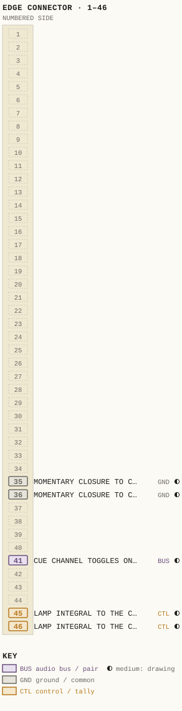
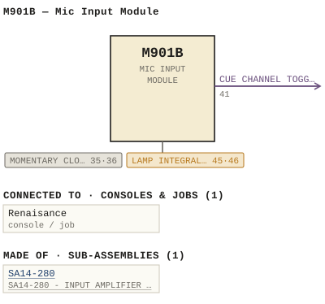

M901B — Mic Input Module
| Type | module |
| Category | UNSORTED |
| Try it | simulator & front panel · download package (zip) |
| Earliest dated evidence | 1994|27 — original file date |
| Evidence | saved 1994-06-29: WBSps Engineering from H drive-20261018T013433Z-1-002/WBSps Engineering from H drive/WBSps - FA93001/M901B.DWG |
| Confidence | medium |
| All years found | 1994|27, 1995|28, 1997|30 |
| Used in jobs | Renaisance |
| Variants | M901, M901A, M901BY, M901C, M901CY, M901D, M901NW |
| Folder | Modules/UNSORTED/M901B |
Connections
What it is made of and what it is part of.
Pictures


M901B.pinout.svg

M901B.connections.svg 19xx - AD - Renaissance console 005.jpg
19xx - AD - Renaissance console 005.jpg 19xx - DOC - UDIO MUE OFF OFF OFF OFF OFF TAKOUAICEO.jpg
19xx - DOC - UDIO MUE OFF OFF OFF OFF OFF TAKOUAICEO.jpg 1995 - 950190 - DOC - 950190-04-001 - NOIE FUTURE MODULES ARE WIRED BUT NOT SUPPLIED.jpg
1995 - 950190 - DOC - 950190-04-001 - NOIE FUTURE MODULES ARE WIRED BUT NOT SUPPLIED.jpg 1996 - 960208 - DOC - 960208-04-001 - HEADPHONE HOM STUDIO MUE TNROTIKO LONIIOK.jpg
1996 - 960208 - DOC - 960208-04-001 - HEADPHONE HOM STUDIO MUE TNROTIKO LONIIOK.jpg 1996 - 960208 - DOC - 960208-04-001 - LAADEODE MUTE STUDIO TAMOURKERO VOHNCA.jpg
1996 - 960208 - DOC - 960208-04-001 - LAADEODE MUTE STUDIO TAMOURKERO VOHNCA.jpgPinout & connections
Each contact as its own documents name it: 5 named (5 medium confidence). An empty slot is a contact no page names. Hover a contact for its source; the table under the drawing lists them.
pinout (SVG) · connections (SVG) · pins (JSON)
Pin evidence — 5 contacts
| Pin | Signal | Kind | Confidence | Read from | Source |
|---|---|---|---|---|---|
| 35 | MOMENTARY CLOSURE TO CONTROL COMMON VIA AN | ground / common | medium | prose | 1995 - M901B - 14-280-02-001 - SA14-280 - INP…, p. 1 “A momentary closure to control common via an open collector transistor which follows input source selection is available at module connecto…” |
| 36 | MOMENTARY CLOSURE TO CONTROL COMMON VIA AN | ground / common | medium | prose | 1995 - M901B - 14-280-02-001 - SA14-280 - INP…, p. 1 “A momentary closure to control common via an open collector transistor which follows input source selection is available at module connecto…” |
| 41 | CUE CHANNEL TOGGLES ON AND OFF | audio bus / pair | medium | prose | 1995 - M901B - 14-280-02-001 - SA14-280 - INP…, p. 1 “This alternate action can be invoked by either momentarily closing Cue switch SW5 (Q), or momentarily grounding of the external Cue control…” |
| 45 | LAMP INTEGRAL TO THE CHANNEL OFF SWITCH | control / tally | medium | prose | 1995 - M901B - 14-280-02-001 - SA14-280 - INP…, p. 1 “The lamp integral to the Channel Off switch is uncommitted and available at module connector P2 pins 45 and 46.” |
| 46 | LAMP INTEGRAL TO THE CHANNEL OFF SWITCH | control / tally | medium | prose | 1995 - M901B - 14-280-02-001 - SA14-280 - INP…, p. 1 “The lamp integral to the Channel Off switch is uncommitted and available at module connector P2 pins 45 and 46.” |
Dates found in the documents
| Year | Kind | Text | File |
|---|---|---|---|
| 1995|28 | manual issue date | Issue #4 September 21, 1995 |
1995 - M901B - 14-280-02-001 - SA14-280 - INPUT AMPLIFIER - ASSEMBLY.wp |
Documents (1)
| Year | File | |
|---|---|---|
| 1995|28 | 1995 - M901B - 14-280-02-001 - SA14-280 - INPUT AMPLIFIER - ASSEMBLY.wp | note |
Photos & scans (1)
| Year | File | |
|---|---|---|
| ? | 19xx - 901-03-005 - M901E MIC INPUT MODULE - ISS 4 or 5 (handwritten, unclear).jpg | note |


Drawings & design files (1)
| Year | File | |
|---|---|---|
| 1994|27 | 1994 - M901B - file.dwg | note |
Sub-assemblies & parts used (1)
| Item | What | Family | Year | How we know |
|---|---|---|---|---|
| SA14-280 | SA14-280 - INPUT AMPLIFIER - ASSEMBLY | Circuit boards (SA14-nnn) | drawing filed with it |
Parts list — board M901B#4 (82 parts)
From M901B#4.WP; also in timelines/data/bom.csv.
| Ref | Part | Value | Manufacturer | Mfr part no. |
|---|---|---|---|---|
| ATT1 | Fader | P&G | PGF3210 | |
| C1 | Capacitor | 10 uF/25 V | ITT | 10M25 |
| C39 | Capacitor | 0.1 uF/100 V | Sprague | K104K20X7RFVBWN |
| C106 | Capacitor | 22 | uF/25 | V Siemens 85200 |
| CR7 | delete | |||
| CR43 | delete | |||
| CR77 | delete | |||
| CR78 | Diode | National | 1N4148 | |
| CR79 | delete | |||
| CR83 | delete | |||
| DS1 | Lamp, Min Flange 24V | Spectro | 387 | |
| DS2 | Led-T1, 3/4 12V | Red | Densitron | T1 3/4R |
| DS3, DS4 | Led, Yellow | H.P. | HLMP 1401 | |
| DS5 | delete | |||
| DS6 | delete | |||
| Q1 | Transistor | National | 2N3904 | |
| Q28 | delete | |||
| Q29 | Transistor | National | 2N3906 | |
| Q49 | delete | |||
| Q50 | delete | |||
| R1 | Resistor | 1/4W 5% | 15K | Philips CR25 |
| R2 | Potentiometer | 500K | Piher | PT10V 500K |
| R3 | Resistor | 1/4W 5% | 470K | Philips CR25 |
| R6 | Potentiometer | 100K | Piher | PT10V 100K |
| R7 | Resistor | 1/4W 1% | 1K | Philips MRS25F |
| R15 | Potentiometer | 500K | Piher | PT10V 500K |
| R16 | Resistor | 1/4W 5% | 470K | Philips CR25 |
| R19 | Potentiometer | 100K | Piher | PT10V 100K |
| R20 | Resistor | 1/4W 1% | 1K | Philips MRS25F |
| R21 | Resistor | 1/4W 1% | 10K | Philips MRS25F |
| R23 | Potentiometer | 5K | Piher | PT10V 5K |
| R24 | Resistor | 1/4W 5% | 16K | Philips CR25 |
| R26 | Resistor | 1/4W 5% | 16K | Philips CR25 |
| R36 | Potentiometer | 10K | Clarostat | 10-075 |
| R37 | Resistor | 1/4W 5% | 20K | Philips CR25 |
| R41 | Resistor | 1/4W 1% | 10K | Philips MRS25F |
| R46 | Resistor | 1/4W 5% | 100K | Philips CR25 |
| R47 | Resistor | 1/4W 1% | 10K | " MRS25F |
| R66 | Potentiometer | 5K | Clarostat | 10-073 |
| R67 | Resistor | 1/4W 5% | 10K | Philips CR25 |
| R77 | Potentiometer | 5K | Clarostat | 10-072 |
| R78 | Resistor | 1/4W 5% | 10K | Philips CR25 |
| R81 | Resistor | 1/4W 1% | 15K | Philips MRS25F |
| R95 | SIP Resistor Network 10K | Bourns | 15-002 | |
| R96 | Resistor | 1/4W 5% | 3K3 | Philips CR25 |
| R98 | Resistor | 1/4W 5% | 3K3 | Philips CR25 |
| R100 | SIP Resistor Network 10K | Bourns | 15-002 | |
| R101 | Resistor | 1/4W 5% | 3K3 | Philips CR25 |
| R107 | Resistor | 1/4W 5% | 100K | Philips CR25 |
| R112 | delete | |||
| R117 | SIP Resistor Network | 10K | Bourns | 15-002 |
| R122 | Resistor | 1/4W 5% | 620 | Philips CR25 |
| R126 | delete | |||
| R128 | Resistor | 1/4W 5% | 10K | Philips CR25 |
| R133 | SIP Resistor Network | 10K | Bourns | 15-002 |
| R134 | Resistor | 1/4W 5% | 3K3 | Philips CR25 |
| R137 | SIP Resistor Network | 10K | Bourns | 15-002 |
| R138 | Resistor | 1/4W 5% | 3K3 | Philips CR25 |
| R143 | Resistor | 1/4W 5% | 22K | Philips CR25 |
| R148 | Resistor | 1/4W 5% | 22K | Philips CR25 |
| R159 | Resistor | 1/4W 5% | 22K | Philips CR25 |
| R161 | Resistor | 1/4W 5% | 100K | Philips CR25 |
| R172 | Resistor | 1/4W 5% | 22K | Philips CR25 |
| R173 | Resistor | 1/4W 5% | 100K | Philips CR25 |
| R183 | Resistor | 1/4W 5% | 22K | Philips CR25 |
| R188 | Resistor | 1/4W 5% | 22K | Philips CR25 |
| R195 | Resistor | 1/4W 5% | 20K | Philips CR25 |
| R199 | Resistor | 1/4W 5% | 9K1 | Philips CR25 |
| R200 | Resistor | 1/4W 1% | 10K | Philips MRS25F |
| R201 | Potentiometer | 5K | Piher | PT10V 5K |
| R202 | Resistor | 1/4W 1% | 47K5 | Philips MRS25F |
| R208 | Resistor | 1/4W 5% | 28K7 | Philips CR25 |
| R213 | Resistor | 1/4W 1% | 10K | Philips MRS25F |
| R223 | Resistor | 1/4W 1% | 10K | Philips MRS25F |
| R232 | Resistor | 1/4W 5% | 120K | Philips CR25 |
| R242 | Resistor | 1/4W 5% | 10K | Philips CR25 |
| R251 | Potentiometer | 5K | Piher | PT10V-5K |
| R252 | Resistor | 1/4W 5% | 39K | Philips CR25 |
| R262 | SIP Resistor Network | 10K | Bourns | 15-002 |
| R264 | Resistor | 1/4W 5% | 10K | Philips CR25 |
| U1 | Integrated Circuit | Analog | SSM2018P | |
| U13 | Integrated Circuit | Signetics | 74HC14N |
Consoles & jobs it is connected to (1)
Their own drawings name this module.
| Job | Year | Drawing | Page |
|---|---|---|---|
| Renaisance | 1994 - Renaisance - MKI.pdf | 4 |
Named in other drawings & documents (19)


From the manuals
Each manual split into its sections. Text that is the same in many Ward-Beck manuals (warranty, address, standard notes) is kept once on the Boilerplate page and linked.
Specifications (1)
Technical Data — 1937 words · 1995 - M901B - 14-280-02-001 - SA14-280 - INPUT AMPLIFIER - ASSEMBLY.wp, page 1
M901B MIC INPUT MODULE
Input Sensitivity: -70 to -30 dBm (ref. 150 ohm source).
Frequency Response: +/-0.4 dB from 20 Hz to 20 kHz. +/-0.2 dB from 30 Hz to 20 kHz. Measured at direct output.
Noise: Greater than 126 dB EIN (20 Hz to 20 kHz).
Harmonic Distortion: Less than 0.2% from 20 Hz to -20 kHz Less than 0.1% from 30 Hz to -20 kHz. At 10 dB above nominal operating level.
Source Impedance: 150 ohms, balanced/ unbalanced.
Input Impedance: 1500 ohms, minimum.
Output Impedance: Less than 60 ohms at insert and direct outputs.
Load Impedance: Greater than 10K balanced at insert and direct outputs.
Output Level: -6 dBu nominal, unbalanced.
Logic Input Levels: Logic 0: 0 to +1.75 volts dc. Logic 1: +3 to +24 volts dc.
External Control Output: Open Collector. Minimum Load Impedance: 600 ohms. Maximum Load Current: 30 mA. Maximum Supply Voltage: +24 volts dc. Saturated Collector Voltage: +2 volts maximum at 30 mA load.
Power Requirements: +/-24 volts dc, 150 mA.
Ambient Temperature: 0 to 50 degrees Celsius.
Weight: 725 grams. The M901B provides the microphone input channel facility for the Renaissance series of radio consoles.
The input source selector allows two separate microphone inputs to be connected to the input module. Each input has its own preamplifier, allowing individual gain trimming of the discrete source inputs.
The sensitivity controls are front panel accessible. These continuously variable controls provide adjustment for input source levels from -60 to -30 dBu.
The preamplifier outputs, once selected, appear at the module connector for the insertion of optional processing.
The cue buss feed is connected to the insert return line so that pre-fade listening of source material can take place before any input module level control.
Direct left and right channel outputs are provided at the module connector. These direct feeds may be optionally used for multitrack applications or to feed the console mix-minus system.
The output from this module may be assigned to any or all of four stereo program busses. These buss selectors are preceded by a centre detent panorama control, giving the operator the ability to pan the input source between the left and right channel of the console program outputs.
Two auxiliaries are also integral to the module. Both are assignable individually pre or post VCA, and each auxiliary has it's own level control and on/off control.
The module also contains a "blind assignable" monophonic post VCA buss output. This buss may be utilized for use by the console mix-minus system.
Unitary control of most module functions is also available at the module connector for machine control as well as external control inputs.
Outgoing control signals are furnished as open collector paths to control common when activated. Comprehensive internal module logic allows intelligent control of external machines, with all outgoing control signals following module source selection (source A or B).
A momentary closure to control common (through an open collector transistor), is provided when the module is turned on or off for both the A or B source. This totals four independent outputs, one start and stop signal for both the A and B module sources.
An additional sustained closure to common is provided for both the A and B input sources. This closure is active when the main channel is on, and is provided for external use. These outputs are also internally assignable to one or all of three internal console muting busses. These busses run to the M905 monitor modules in the console system for muting the monitor speakers.
The internal buss structure of the console also has a cue control buss. If a module is assigned to this buss, putting the module into cue will activate the auto cue function in the M905A control room monitor module.
The lamp internal to the channel off button is uncommitted and is brought out on the module connector. This is intended for utilization as a tally indicator for external machinery.
Module control inputs are also configured to activate when a closure to control common is provided. The module can be turned on and off, the cue can be toggled, and the source can be selected between A and B by simply grounding the appropriate module connector pin.
Program buss assignment is also possible external to the module. Again, a closure to control common will effect this assignment. To change a previous buss assignment, the electronic latches require clearing before loading them with new buss assignments. A closure to common will also perform this function.
External control of the VCA within each module is also brought out to the edge connector. Application of a voltage between 0 and 5 volts DC will bring the attenuator from no external attenuation to full attenuation from the current fader position. This feature can be of benefit for automated cross-fading. The M901B Mic input module is packaged in a 1.5" wide x 16.2" high x 6.6" deep.
This module derives its power from the console system bipolar +/-24 volt power supplies. 1) Source "B" Select
Depressing this momentary switch (SW2), enables the "B" input source and disables the "A" input source selection (if it was selected). Double pressing the active switch will cancel the selection.
2) Source "A" Select
Depressing this momentary switch (SW1), enables the "A" input source and disables the "B" input source selection (if it was selected). Double pressing the active switch will cancel the selection. This source is selected automatically when power is supplied to the module.
3) P3 Select
Switch SW14, a momentary switch with an electronic latch attached to it, controls the assignment of the module output to the program 3 stereo buss in the console.
4) P1 Select
This electronically latched, momentary switch, (SW12), assigns the stereo audio signal to the program 1 stereo mix buss. This assignment is performed automatically on module power-up.
5) Pan Co
Drawings (1)
Each scan with its trace laid over it: the slider runs from the scan to the vector drawing. Click one to see it large and save it as SVG, DXF, KiCad, PDF or PowerPoint.
M901B/M901E / MIC INPUT / MODULEviewer
Read from the drawing title blocks.
| Drawing | Title | Date | Drawn by | Checked by | Iss. | Source |
|---|---|---|---|---|---|---|
| D 901-03-005 | M901B/M901E / MIC INPUT / MODULE | 4 or 5 (handwritten, unclear) | file |